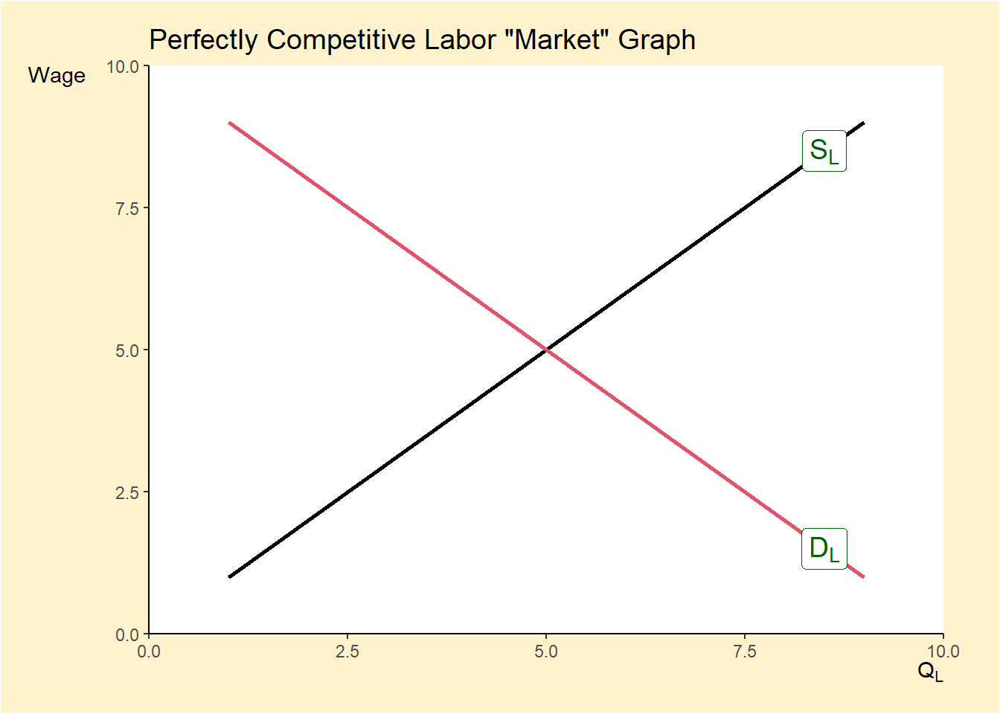
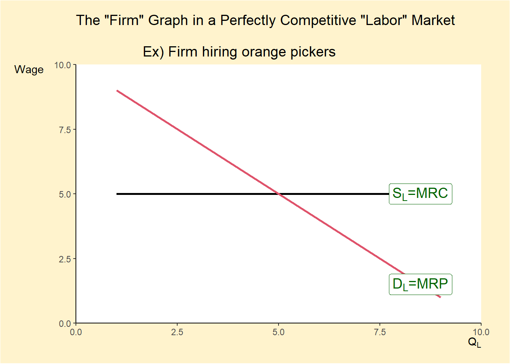
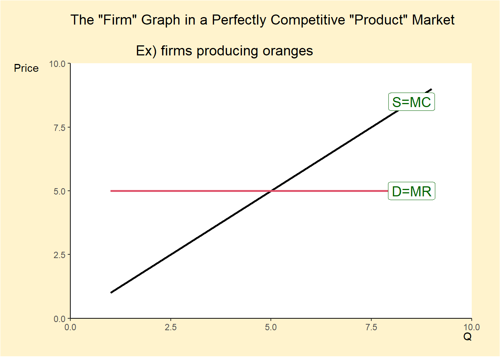
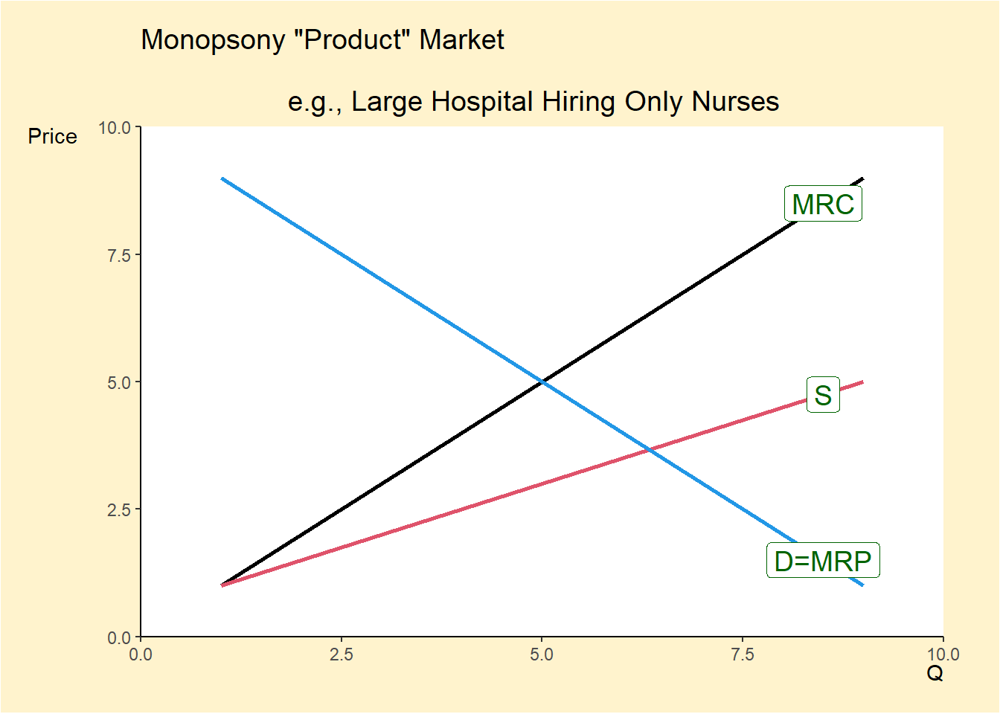

This page is a note for AP micro economics. It is a collection of study materials from sources in the reference list in the bottom and it is reorganized in my preference.
For other units, please refer to the following links
- Unit1:
- Unit2:
- Unit3:
- Unit4:
- Unit5:
- Unit6:
5. Factor Markets (10% – 13%)
5.1 Introduction to factor markets
- The factor (i.e., resource) market is where the factors of production are sold by households to businesses.
- The factors of production are land, labor, capital, and entrepreneurship.
- The corresponding payments for these factors of production are rent, wage, interest, and profit.
Derived Demand - the demand for resources is determined (derived) by the products they help to produce - Take labor market as an example - What is Demand for Labor? - Demand is the different quantities of workers that business are willing and able to hire at different wages - When wage level increases, the quantity of inputs demanded decreases. - When wage level decreases, the quantity of inputs demanded increases.
Key terms
- Marginal product (MP)
- The additional product that is produced by each additional input. We calculated this number by dividing the change in the total product by the change in the number of inputs.
- Marginal revenue product (MRP)
- The marginal revenue generated for a firm by each additional resource.
- Marginal resource cost (MRC)
- The additional cost incurred by hiring or employing one more unit of the resource.
Rule for hiring labor
- firms will continue to hire workers and resources as long as
- marginal revenue product (MRP) > marginal resource cost (MRC)
- until marginal revenue product (MRP) = marginal resource cost (MRC)
Compare the marginal revenue product (MRP) to marginal resource cost (MRC) at each input level in order to find the number that inputs that gets us closest to MRP = MRC, without MRC being greater than MRP.
In this particular example, 4 inputs makes MRP = MRC (30USD = 30USD), so the firm will hire 4 workers.
5.2 Changes in factor demand and factor supply
3 Determinants of Resource Demand
- Changes in the demand for the product
- price increase of the product increases the demand for the rsource
- derived demand
- coffe beans for americano
- Changes in productivity of the resource
- new technique is developed that cuts production time in half
- each worker generating a greater marginal revenue product
- increases the demand for labor
- Changes in price of other resources
- substitue resources
- if the price of NVIDIA graphic card increases, desktop manufacturer will more willing to demand AMD graphic card
- complementary resources
- Both aluminum and sugar are used in the production of soft drinks. If the price of aluminum increases, then we would see the demand for sugar decrease since both products are used to produce soft drinks.
- substitue resources
3 Determinants of Resource Supply
- Personal values / leisure
- Low-skill workers decide that working at minimum wage isn’t worth their time. This would shift the labor supply curve to the left due to the decrease in the amount of workers.
- The increase in the labor force, especially women, during WWII because people saw it as a patriotic duty to help produce the goods that would help in the war efforts. This would increase the labor supply and shift the curve right.
- Government regulation/licensing
- If the government establishes a certification process that makes it harder to be an electrician than we would see the supply of electricians decrease shifting the labor supply curve to the left
- If puffer fish food cooks had to get an advanced degree, supply would fall
- Number of qualified workers
- Education, Immigration, Training
- If a country enacts stricter immigration laws than that will shift the labor supply to the left because of the smaller pool of workers.
- Education, Immigration, Training
5.3 Profit-maximizing behaviour in perfectly competitive factor markets
There are two types of factor markets
- Perfectly competitive factor/resource market
Characteristics of Perfectly Competitive Labor Market
- Many small firms hiring workers
- No one firm is large enough to manipulate the market.
- Many workers with identical skills
- Wage is constant
- Workers are wage takers
In the perfectly competitive labor market,
- Demand curve is downward-sloping
- law of diminishing marginal returns
- each additional worker generates less revenue (MRP)
- worth less to the firm
- Supply curve is upward-sloping
- incentive to earn higher wages and greater income
- incentive to give up leisure time and offer more of their time as workers
- deter workers from wanting to work more
Graphs

- Notice that \(S_L\) and \(D_L\) are used to describe the supply and demand of labor.
Perfect Competition Product Market vs Resource Market

- The perfect labor market firm graph looks a little different than it did in the product market.
- The demand for labor, otherwise known as MRP, is downward sloping.
- The supply of labor, otherwise known as MRC, is perfectly elastic.
- This shows that workers are wage takers and that firms hire all workers at the same wage level set by the market.
- The quantity of labor that each individual firm will hire is where MRC = MRP.
Cost minimizing combination of resources (Least-Cost Rule)
- Firms must be careful to choose a combination of resources that will minimize their costs
- In order for a firm to be using the combination of resources that will reduce its costs, they have to satisfy the following formula \[\frac{MP_X}{P_X} = \frac{MP_Y}{P_Y}\]
MP stands for marginal product and P stands for price. The x and y represent different resources.
Let’s look at an example with robots, a capital resource, and workers, labor resources. For this example, let’s say the firm has a budget of 35USD and needs to find the combination of resources that will minimize their costs. Robots cost 10USD each and workers cost 5USD each.
Input = c(1:4)
MP_Robot = c(30,20,10,5)
P_Robot = rep(10,4)
MP_Worker = c(20,15,10,5)
P_Worker = rep(5,4)
MP_P_Robot = MP_Robot/P_Robot
MP_P_Worker = MP_Worker/P_Worker
df = as.data.frame(cbind(Input,MP_Robot,P_Robot, MP_P_Robot,
MP_Worker, P_Worker,MP_P_Worker))
datatable(df, rownames = FALSE,
options = list(
columnDefs = list(list(className = 'dt-center', targets = "_all")))
)From the above graph
The first step in determining the least cost combination is to decide what resources you are going to purchase. We always start with the resource that has the highest MP/P. In this case that is the first worker. When this firm purchases the first worker, we subtract 5USD off their budget, which leaves them with 30USD (35USD-5USD).
They then move on to determine whether they should buy another worker or the first robot. Since the MP/P is the same for both these resources they will purchase a robot and a worker, which will cost them 15USD. This reduces their budget to 15USD (30USD-15USD).
They then go on to the 3rd worker and the 2nd robot and see that the MP/P are identical here as well. They will again purchase both the worker and the robot, which will cost them 15USD and will exhaust their budget (15USD-15USD).
5.4 Monopsonistic markets
The second type of factor (resource) market is called a monopsony. A monopsony is an imperfectly competitive factor market where only a single firm buys resources.
- Characteristics of Monopsonies
- Onne, large firm hires all workers in a single labor market and is large enough to control the labor market.
- The market is imperfectly competitive
- The firm is a wage maker
- Firms must increase wages in order to hire additional wages
- MRC > wage per worker
- The firm will hire the quantity of labor where MRP = MRC
- The firm will pay workers a wage that they are willing and able to work for below their MRP
Differences between a perfectly competitive labor market and a monopsony
- Perfectly competitive
- Supply = MRC
- Hires workers at a quantity where MRP = MRC
- Wage = MRP
- Monopsony
- Supply < MRC
- Hires fewer workers than perfectly competitive market because MRC > Supply
- Wage < MRP

In a monopsony, we determine the number of workers by finding where MRP = MRC and then going down to the horizontal axis. We determine wage by finding MRP = MRC and then going down to the supply curve and over to the vertical axis.
Sample Problem
There is 1 large hospital in a city that hires nurses. There are no other hospitals nearby that nurses are willing or able to travel to. What is the labor cost for this firm based on the graph?
- Answer
- 360 USD
- Explanation
- Since the large hospital is the only firm hiring nurses, we know that this is a monopsony. Monopsonistic firms hire the quantity where MRP = MRC, but only pay the wage level where the quantity intersects the labor supply curve. Therefore, we know that the equilibrium wage is 12USD and the equilibrium quantity is 30. To find our total labor costs for nurses, we simply multiply the wage by the quantity (12USD x 30 = 360USD).
Source
- Fiveable by Jeanne Stansak
- AP microeconomics course and exam description